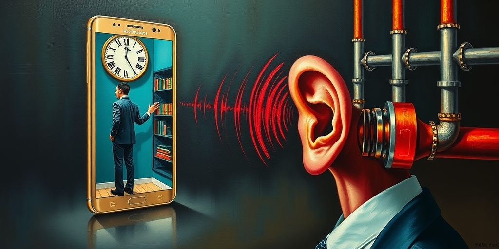
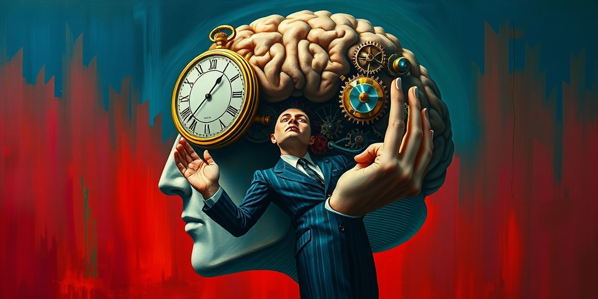
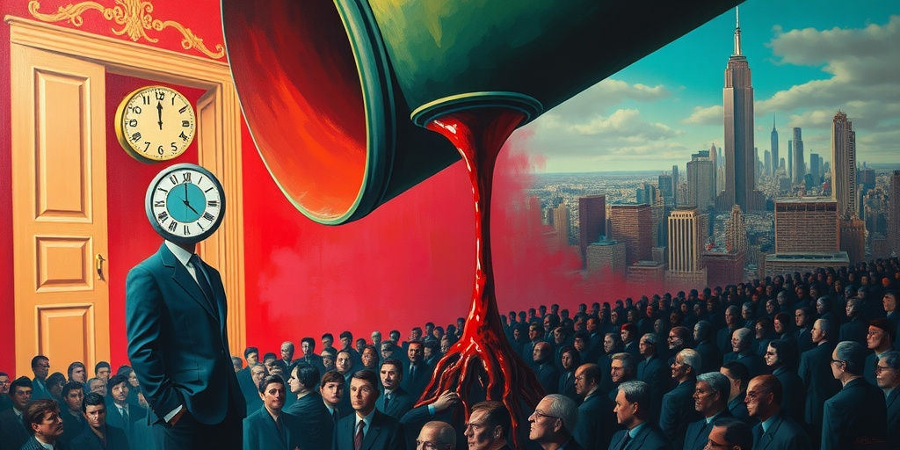
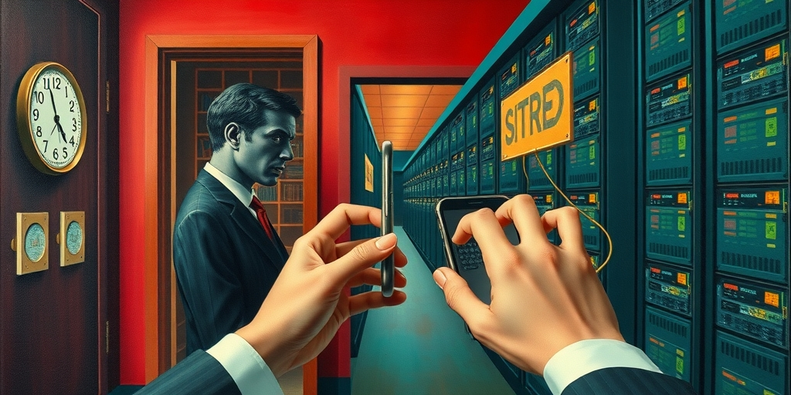

小汪老师的成长洞察 · 属于你的成长专栏
你刷了十分钟短视频，感到莫名的焦躁。伴侣在旁边说，能不能把声音关小点。你以为这只是素质问题。你错了。你正在经历一场针对神经系统的工业化刺激，而你每一次被激怒后留下的评论，都是这个系统最需要的燃料。

打开任何一个短视频平台，三秒之内你会被什么击中。不是内容，是声场。高亢的背景音乐，加速到不自然的语速，刻意拔高两个音调的说话方式。这些不是偶然的低素质，是一场精心计算的感官军备竞赛。
影视飓风Tim做过技术分析。平台偷偷把默认音量抬高了几个分贝。因为在海量信息流中，只有突破人类听觉阈值的刺激，才能抢夺那零点五秒的注意力窗口。这不是感觉，是可测量的。你的烦躁有物理基础。
再看内容本身。AI生成的临终遗言，刻意编造的卖惨故事，用同一个文案模板批量生产的情感语录。明明拙劣到一眼就能看穿，却依然能获得百万点赞。常识告诉我们观众不傻。数据告诉我们这套东西有效。这个矛盾本身就是最好的切入点。

不要把音量问题归结为创作者素质低下。这是一场对神经系统的暴力破解。人类的听觉系统演化了几百万年。它对突发性高频刺激有一套硬连线的警觉反应。你无法通过理智关闭它。
当你的伴侣在房间里感到莫名的躁动不安，那不是她太敏感。是人类的生理本能正在对这种持续的数字噪音发出排异反应。大脑被训练成了一种高频刺激依赖。正常语速，正常音量，正常情绪起伏的内容，在算法优化的信息流里已经无法激活足够的注意力。
这不是审美退化。这是生理层面的阈值抬升。这个机制和成瘾的逻辑完全同构。每一次高频刺激都抬高了足够有趣的基准线。下一次需要更强的刺激才能达到同样的唤醒水平。平台不是被动地迎合用户，而是在主动制造一个不断加速的感官通胀螺旋。内容不变刺激，就会被算法淘汰。算法持续抬高刺激门槛，内容只能更刺激。这是一台自我加速的机器。

为什么连老江湖都会被拙劣的演技骗到眼泪。答案不在观众变笨了。而在于情绪收割的商业逻辑决定了它必须向下兼容。如果一段表演克制，细腻，逻辑严密，它能触达的是认知水平较高的小众群体。他们能欣赏复杂性，但他们也是最难被情绪操控的群体，因为他们的防御机制是理性。
如果一段表演把情绪放大到夸张甚至荒诞的程度。AI生成的临终遗言，一个演员对着镜头哭了三分钟，一段被证实是编造的底层苦难叙事。它反而能击穿下沉市场庞大群体的心理防线。这不是艺术的失败，是商业转化率的精准打击。
情绪颗粒度越粗，能穿透的人群截面越大。克制只能收割有欣赏能力的人。夸张才能收割所有人。所以用力过猛不是业余。在一个以互动数据为唯一KPI的系统里，它是经过无数次A/B测试验证的最优策略。两层结合起来，形成了一条完整的流水线。生理层面，用感官劫持抢夺零点五秒的注意力。认知层面，用粗糙但高穿透力的情绪内容将那零点五秒转化为互动数据。

你以为你在抵制。你在为它增加一条训练样本。你以为你在揭露。你让这条内容被推送给更多人。算法的优化目标里，正面和负面情绪完全等价。愤怒点踩是互动。评论骂人是互动。转发嘲讽是互动。
平台不会主动说我们鼓励骗术。但每一个优化互动时长的工程师，每一个调整推荐权重的产品经理，每一个制定KPI的高管。他们的每一个决策都在客观上奖励了制造情绪刺激的人，惩罚了提供审慎思考的人。一条深度分析的严肃内容，用户的平均停留时长也许有一分钟。但只有百分之三的人会看完。
一条AI生成的虚假临终遗言，百分之八十五的人会在前三秒被情绪击中并停留。从算法优化的角度看，后者是更优质的内容，因为它创造了更多互动分钟。这不是容忍骗术。这是需要骗术。如果只是少数人在骗，问题很简单，封掉他们就行。但这个生态的核心悖论在于，平台不是容忍了骗术，是需要骗术。
更深一层。当AI大模型需要海量的人类语言数据来训练时，什么数据量最大。不是你精心撰写的文章。不是你深夜写下的真正感受。是每天数百亿条短视频评论区里的情绪碎片。破防了。笑死。哭死了。无语了。太假了吧。
这些看似无意义的三字评论，是全世界最大规模的人类情绪标注数据集。每一条评论都在告诉AI，这个内容触发了人类的哪种情绪。AGI的圣杯，底部铺着的不是莎士比亚，是这几百亿条哈哈哈，呜呜呜，cnm。
这是一个让人极度不适的结论。你以为是垃圾的东西，恰恰是整个系统最需要的原料。内容消费者不再是消费者。他们是情绪矿工。每一条不经意的互动都在为AI产业采集训练数据。你被收割的不只是注意力和时间。你被收割的是你的情绪反应本身。愤怒，同情，讽刺，鄙视，所有情绪在算法的眼里都是等价的数据点。你骂自媒体的那个动作本身，也在这台机器的齿轮上。
写给你的话
下一次你被一条低质内容激怒，打字评论的时候，你会意识到一件事。你正在做的事情，和你刚才痛骂的那种人正在做的事情，在系统的计算里，是同一件事。你无法退出这个循环。因为每一次抵制本身也在喂数据。这不是一个道德问题。这是一个结构问题。你唯一能做的，是带着这种不适感继续刷下去——至少这一次，你知道自己在参与什么。
小汪老师的成长洞察 · 属于你的成长专栏